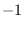
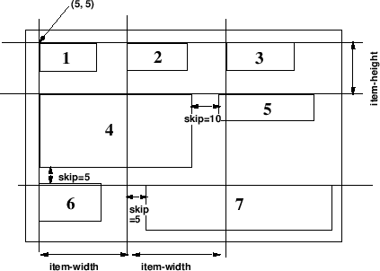
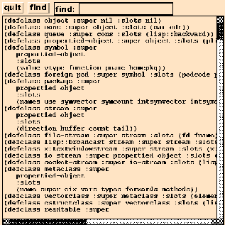
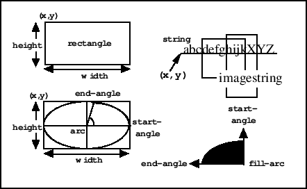

Subsections
XToolKit is the highest level X window interface to facilitate composing
GUI (Graphical User Interface) by using GUI components such as
buttons, pulldown menus, textWindows, etc., as building blocks.
The major differences from the Xlib classes are,
the XToolKit invokes user-supplied interaction routines
corresponding to the Xevents sent from the Xserver,
and provides consistent appearance of those interaction-oriented
window parts.
Classes consisting the XToolKit has the following inheritance structure.
xwindow
panel
menubar-panel
menu-panel
filepanel
textviewpanel
confirmpanel
panel-item
button-item
menu-button-item
bitmap-button-item
text-item
slider-item
choice-item
joystick-item
canvas
textwindow
buffertextwindow
scrolltextwindow
textedit
scroll-bar
horizontal-scroll-bar
Just below the xwindow class are the five basic XToolKit classes:
panel, panel-item,
canvas, textWindow and scroll-bar.
Menubar-panel and menu-panel are defined under the panel.
A basic strategy to build a new application window and to make
it run upon events is the following:
- define an application class An application window class should be
defined as a subclass of panel that has the capability to lay out
XToolKit components.
- define event handlers In the application class, event handlers
that are called upon when buttons are pressed or menu items are selected
are defined. An event handler ought to be defined as a method
with panel-item specific arguments.
- define subpanels If you use a menubar-panel, it is placed at the
top of the application window, therefore it should be created first
by :create-menubar. Similarly menu-panels needs to be
defined before the menu-button-items to which menu-panels
are associated.
- create panel-items Panel-items such as button-item,
text-item, slider-item, etc., can be created
by (send-super :create-item class label object method).
Event handlers defined above are connected to each panel-item.
These initialization procedures should be defined in the :create
method of the application window class.
Do not forget to define quit button to make the event
dispatcher terminate whenever needed.
Any textWindow and canvas can also be placed in the application
window via the :locate-item method.
- create the entire window Sending the :create message to
the application class creates
the application window with its XToolKit components properly placed
in the window.
- run the event dispatcher In order to receive events from the
Xserver and delivers them to the corresponding xwindow,
run window-main-loop.
On Solaris2, window-main-thread, which delivers events in a
different thread, is available.
Window-main-thread keeps the toplevel interaction alive.
Do not run more than one window-main-thread.
In the current implementation,
an event structure is received in a fixed event buffer (an integer-vector
of 25 elements)
and the same buffer is reused on all events.
The event structure has to be copied when more than one events need to
be referenced at the same time.
Window-main-loop is the function which captures all events sent
from the X server and delivers them to each window where the event happened.
event [variable]
-
- a 25-element integer-vector holding the most recent
event structure.
next-event [function]
-
-
stores the event structure in event and returns it
if there is at least one pending event,
NIL if there is no pending event.
event-type event [function]
-
-
returns the keyword symbol representing the event-type in the event
structure. The event-type keywords are:
:KeyPress (2),
:KeyRelease (3),
:ButtonPress (4),
:ButtonRelease (5),
:MotionNotify (6),
:EnterNotify (7),
:LeaveNotify (8),
:FocusIn (9),
:FocusOut (0),
:KeymapNotify (1),
:Expose (12),
:GraphicsExpose (13),
:NoExpose (14),
:VisibilityNotify (15),
:CreateNotify (16),
:DestroyNotify (17),
:UnmapNotify (18),
:MapNotify (19),
:MapRequest (20),
:ConfigureNotify (22),
:ConfigureRequest (23),
:GravityNotify (24),
:ResizeRequest (25),
:CirculateNotify (26),
:CirculateRequest (27),
:PropertyNotify (28),
:SelectionClear (29),
:SelectionRequest (30),
:SelectionNotify (31),
:ColormapNotify (32),
:ClientMessage (33),
:MappingNotify (34),
:LASTEvent (35).
event-window event [function]
-
-
returns the window object where the event occurred.
event-x event [function]
-
- extracts the x coordinate,
(i.e., the horizontal position of the mouse pointer relatively in the window)
out of the event.
event-y event [function]
-
- extracts the x coordinate,
(i.e., the vertical position of the mouse pointer relatively in the window)
out of the event.
event-width event [function]
-
-
returns the eighth element of the event structure
which represents the width parameter at the :configureNotify event.
event-height event [function]
-
-
returns the ninth element of the event structure
which represents the height parameter at the :configureNotify event.
event-state event [function]
-
-
returns a list of keywords representing the mouse button
and modifier key state.
Keywords are: :shift, :control, :meta, :left, :middle and :right.
For example, if left mouse button is pressed while shift key is down,
(:shift :left) is returned.
display-events [function]
-
- displays all xwindow events captured by
x:nextevent. Control-C is the only way to terminate this function.
window-main-loop &rest forms [macro]
-
-
receives Xevents and delivers them to window objects where the event
occurred.
According to the event-type, methods in the window's class named
:KeyPress, :KeyRelease, :ButtonPress,
:ButtonRelease, :MotionNotify,
:EnterNotify, :LeaveNotify and :ConfigureNotify
are invoked with event as the argument.
If forms is given,
evaluates them each time event arrival is checked.
window-main-thread [function]
-
-
Do the same thing as window-main-loop in a different thread.
Window-main-thread is only available on Solaris2.
Window-main-thread installs an error handler which
does not enter a read-eval-print loop.
After printing the error information, the event
processing continues.
panel [class]
:super xwindow
:slots (pos items fontid
rows columns ;total number of rows and columns
next-x next-y
item-width item-height)
-
- Panel is a xwindow with the capability to lay out panel-items or any
xwindows including other panel objects.
A panel object supplies the default font for every panel-item
created in the panel.
Application windows should be defined as subclasses of the Panel.
:create &rest args &key ((:item-height iheight) 30)((:item-width iwidth) 50)[method]
(font font-lucidasans-bold-12) ((:background color) *bisque1*)
&allow-other-keys)
-
- creates and initializes a panel.
Since superclass's :create is invoked,
all creation parameters for xwindow, such as width, height,
border-width, etc., are allowed.
Item-height and item-width give the minimum height and width
for each panel-item.
:items [method]
-
- returns the list of all items associated.
:locate-item item &optional x y [method]
-
-
Item is any xwindow object, normally a panel-item.
If x and y are given, the item is located there.
Otherwise, item is located adjacent to the most recently located item.
Items are located from top to bottom, from left to right,
as shown in Fig. 17.
:Locate-item also adds item in the items and subwindows
list, and makes it visible by sending :map.
Figure 17:
Item lay-out in panel
|

|
:create-item klass label receiver method &rest args[method]
&key ((font fontid)
&allow-other-keys)
-
- creates an instance of the panel-item class specified by klass
(i.e., button-item, menu-button-item, slider-item, joystick-item, etc.),
and place the item in the panel using :locate-item.
Args are passed to klass's :create method.
Label is the identification string drawn in the panel item.
Receiver and method specify the event handler called upon
the corresponding event.
:delete-items [method]
-
- delete all panel-items.
:create-menubar &rest args [method]
&key (font fontid)
&allow-other-keys
-
- creates a menubar-panel and locates it at the top of the panel.
The following methods are provided to avoid "subclass's responsibility"
warning message when events are sent to panels without event handlers.
User applications should override these methods.
:quit &rest a [method]
-
-
throws :window-main-loop and terminates event processing.
:KeyPress event [method]
-
- returns NIL.
:KeyRelease event [method]
-
- returns NIL.
:ButtonPress event [method]
-
- returns NIL.
:ButtonRelease event [method]
-
- returns NIL.
:MotionNotify event [method]
-
- returns NIL.
:EnterNotify event [method]
-
- returns NIL.
:LeaveNotify event [method]
-
- returns NIL.
menu-panel [class]
:super panel
:slots (items item-dots item-height
charwidth charheight
height-offset
highlight-item
color-pixels
active-color)
-
- Menu-panel is a kind of panel that can locate only
button-items and/or bitmap-button-items.
Unlike panel, however, menu-panel is normally invisible
and is exposed when the button-item to which the menu-panel is
associated is pressed.
If a menu-panel is made always visible, it becomes a pinned menu.
The response of each button-item to mouse events is slightly different from
button-items in other panels,
as the mouse button has been pressed somewhere outside the button-item.
Creation of a menu-panel should follow the order described below:
- create a menu-panel by (instance menu-panel :create).
- create button-items or/and bitmap-button-items and locate them in the
menu-panel by (send aMenuPanel :create-item button-item "BTN" obj meth).
- create a menu-button-item in another panel and associate the menu-panel
with the menu-button-item by (instance menu-button-item :create
"Option" obj meth :menu-window aMenuPanel).
:create &rest args &key(items) (border-width 0) (font font-courb12)[method]
(width 100) (height-offset 15) (color *bisque1*) (active *bisque2*)
&allow-other-keys)
-
- create a menu-panel window. The size of the window is expanded each time
new menu-item is added.
:create-item class label receiver method &rest mesg [method]
-
-
adds a menu item in this menu-panel window and attatches
the corresponding action.
The receiver objects receives mesg
when the mouse button is released on the item.
menubar-panel [class]
:super panel
:slots
-
- Menubar-panel is a subpanel always located at the top of the parent
panel. A menubar-panel resembles with the Macintosh desktop's menubar
which lets out several pull-down menus.
Panel-items placed in the menubar should be menu-button-items.
A menubar-panel is created by the panel's :create-menubar method.
The FilePanel is an application window for the interactive manipulation
of files and directories.
Using cd and go-up buttons, any directory can be visited
and files contained in the directory are displayed in the ScrollTextWindow
below.
Text files can be displayed in different windows (textViewPanel).
Files can also be printed, removed, and compiled by simply cliking buttons.
When a file is printed, a2ps file | lpr commands are executed
in a forked process.
Figure 18:
FilePanel window
|

|
TextViewPanel is an application window class to display text files
(Fig. 19).
The program text is shown to demonstrate how
one of the simplest application windows is described.
In the :create method, the quit button and find button,
and a text-item to feed the string to be searched for in the file
are created.
The view-window is a ScrollTextWindow that displays the file
with the vertical and horizontal scroll-bars.
The TextViewPanel captures :ConfigureNotify event
to resize the view-window when the outermost title window is resized
by the window manager.
Figure 19:
TextViewPanel window
|
|
(defclass TextViewPanel :super panel
:slots (quit-button find-button find-text view-window))
(defmethod TextViewPanel
(:create (file &rest args &key (width 400) &allow-other-keys)
(send-super* :create :width width args)
(setq quit-button
(send self :create-item panel-button "quit" self :quit))
(setq find-button
(send self :create-item panel-button "find" self :find))
(setq find-text
(send self :create-item text-item "find: " self :find))
(setq view-window
(send self :locate-item
(instance ScrollTextWindow :create
:width (setq width (- (send self :width) 10))
:height (- (setq height (send self :height)) 38)
:scroll-bar t :horizontal-scroll-bar t
:map nil :parent self)))
(send view-window :read-file file))
(:quit (event) (send self :destroy))
(:find (event)
(let ((findstr (send find-text :value)) (found)
(nlines (send view-window :nlines)))
(do ((i 0 (1+ i)))
((or (>= i nlines) found))
(if (substringp findstr (send view-window :line i)) (setq found i)))
(when found
(send view-window :display-selection found)
(send view-window :locate found))))
(:resize (w h)
(setq width w height h)
(send view-window :resize (- w 10) (- h 38)))
(:configureNotify (event)
(let ((newwidth (send self :width))
(newheight (send self :height)))
(when (or (/= newwidth width) (/= newheight height))
(send self :resize newwidth newheight))) ) )
panel-item [class]
:super xwindow
:slots (pos notify-object notify-method
fontid label labeldots)
-
- Panel-item is an abstract class for all kinds of panel-item windows
to invoke notify-object's notify-method when item-specific
event occurs.
:notify &rest args [method]
-
-
invokes notify-object's notify-method.
Responsive events and arguments passed to notify-method
are item specific:
- button-item
- The button is pressed and released
in the same button-item;
the argument is the button-item object.
- menu-button-item
- A menu item is selected;
the argument is the menu-button-item object.
- choice-item
- A new choice button is selected; the arguments are
the choice-item object and the index number of the choice.
- text-item
- A newline or return is entered; the arguments are
the text-item object and the entire line (string).
- slider-item
- The slider nob is grabbed and moved; the arguments are
the slider-item object and the new value.
- joystick-item
- The joystick is grabbed and moved; the arguments are
the slider-item object, the new x and y values.
:create name reciever method &rest args[method]
&key ((:width w) 100) ((:height h) 100) (font font-courb12)
&allow-other-keys
-
- creates a panel-item.
As panel-item is an abstract class,
this method should only be called by the subclasses
via send-super.
button-item [class]
:super panel-item
:slots
-
- button-item is the simplest panel-item.
Button-item has a rectangular box and a label string in it.
When clicked, button-item invokes notify-object's notify-method
with the panel-item object as the only argument.
:draw-label &optional (state :top) (color bg-color) (border 2) (offset) [method]
-
-
draws button-item's label.
:create label revciever method &rest args[method]
&keywidth height (font (send parent :gc :font))
(background (send parent :gc :background))
(border-width 0)
(state :top)
&allow-other-keys
-
- creates a button-item.
If button's width and height are not given,
the sizes are automatically set to accomodate the label string
drawn with the given font.
Though the border-width is defaulted to 0,
pseudo 3D representation embosses the button.
The background color and font are defaulted to the ones defined for
the parent window, i.e. a panel.
:ButtonPress event [method]
-
-
changes the background color to gray, as if the button.
:ButtonRelease event [method]
-
-
changes event's background color to normal.
menu-button-item [class]
:super button-item
:slots (items item-dots item-labels
charwidth charheight
menu-window window-pos high-light)
-
- defines a pulldown menu.
Though a menu-button-item looks like a button-item,
the menu-button-item activates associated menu-panel
below the button when it is pressed,
instead of sending an immediate message to the notify-object.
The actual message is sent when the mouse button is released on
one of the menu items.
:create label reciever method [method]
&rest args
&key (menu nil) (items) (state :flat)
&allow-other-keys
-
- creates a pulldown menu button.
Receiver and method arguments has no effect.
:ButtonPress event [method]
-
-
reverses the appearance of the pulldown-menu
and exposes the associated menu-panel below the button.
:ButtonRelease event [method]
-
-
unmaps the menu-panel below this button
and reverts the appearance of the button.
bitmap-button-item [class]
:super button-item
:slots (pixmap-id bitmap-width bitmap-height)
-
- Though bitmap-button-item's function is similar to
the button-item, its appearance is different.
Instead of drawing a simple label string on the button, as is the
case for button-item,
bitmap-button-item is drawn by a pixmap which is loaded
from a bitmap-file when the button is created.
:draw-label &optional (state :flat) (color bg-color) (border 2) [method]
-
-
draws a bitmap/pixmap on the button.
:create bitmap-file reciever method &rest args[method]
&key width height
&allow-other-keys)
-
- creates bitmap-button-item.
The first argument, bitmap-file replaces the label argument
of button-item.
:draw-label &optional (state :flat) (color bg-color) (border 2) [method]
-
-
draw a bitmap/pixmap on the button.
:create-bitmap-from-file fname [method]
-
-
creates pixmap from the bitmap file named fname,
and stores its id in pixmap-id.
choice-item [class]
:super button-item
:slots (choice-list active-choice transient-choice
choice-dots choice-pos button-size)
-
- choice-item is a set of round choice buttons.
One choice is always active, and only one choice can become active at
the same time.
choice-item provides the similar function as radio-buttons.
:create label reciever method &rest args[method]
&key (choices '("0" "1")) (initial-choice 0)
(font (send parent :gc :font))
(button-size 13)
(border-width 0)
-
- create a choice-item-button. Each choice button is a circle of
radius button-size.
When a new choice is selected, notify-object's notify-method
is invoked with the choice-item object and the index of the choice selected.
:value &optional (new-choice) (invocation) [method]
-
-
If new-choice is given, it is set as the current active choice,
and the corresponding circle is filled black.
If invocation is also specified, notify-object's notify-method
is invoked.
:Value returns the current (or new) choice index.
:draw-active-button &optional
(old-choice active-choice) (new-choice active-choice) [method]
-
-
draw active button.
:buttonPress event [method]
-
-
If the mouse button is pressed on any of the choice buttons,
its index is recorded in transient-choice.
No further action is taken until the mouse button is released.
:buttonRelease event [method]
-
-
If the mouse button is released on the same button which is already pressed,
the active-choice is updated and
notify-object's notify-method is invoked.
slider-item [class]
:super panel-item
:slots (min-value max-value value
minlabel maxlabel valueformat
bar-x bar-y bar-width bar-height valuedots label-base
nob-x nob-moving
charwidth)
-
- While choice-item is used to select a discrete value,
slider-item is used for the continuous value in the range
between min-value and max-value.
Each moment the value is changed, notify-object's notify-method
is invoked with the slider-item object and the new value as the arguments.
:create label reciever method &rest args[method]
&key (min 0.0) (max 1.0) (parent)
(min-label "") (max-label "") (value-format " 4,2f")
(font font-courb12) (span 100) (border-width 0) (initial-value min)
-
- creates slider-item.
The sliding knob is displayed as a small black rectangle on a bar.
The left end represents the min value and the right end max value.
The length of the bar stretches for the span dots.
The current value is displayed to the right of the slider-item label
in the value-format.
:value &optional newval invocation [method]
-
-
If newval is given, it is set as the current value,
and the knob is slided to the corresponding location.
If invocation is also specified non nil,
notify-object's notify-method is invoked.
:Value returns the current (or new) value.
joystick-item [class]
:super panel-item
:slots (stick-size min-x min-y max-x max-y
center-x center-y stick-x stick-y
value-x value-y
stick-return stick-grabbed
fraction-x fraction-y)
-
- joystick-item can be regarded as the two-dimensional slider-item.
Two continuous values can be specified by the moving black circle
on the coaxial chart that looks like a web (Fig. 20).
:create name reciever method &rest args[method]
&key (stick-size 5) (return nil)
(min-x -1.0) (max-x 1.0)
(min-y -1.0) (max-y 1.0)
&allow-other-keys)
-
- Stick-size is the radius of the stick's black circle.
The sizes of the circles in the coaxial chart are determined
according to the width and height of the joystick-item window.
If return is non-NIL,
the joystick returns to the origin when the mouse button is released.
Otherwise, the joystick remains at the released position.
:value &optional (newx) (newy) (invocation) [method]
-
-
If both newx and newy are given, they are
set as the current values,
and the joystick moves to the corresponding location
on the coaxial chart.
If invocation is also specified non nil,
notify-object's notify-method is invoked
with the joystick-item object and x and y values as the arguments.
:Value returns the list of current (or new) values.
The following short program shows how to use panel-items
described above, and Fig. 20 depicts how they
appear in a panel.
(in-package "X")
(defclass testPanel :super panel
:slots (quit joy choi sli))
(defmethod testPanel
(:create (&rest args)
(send-super* :create :width 210 :height 180
:font font-courb12 args)
(send-super :create-item button-item "quit" self :quit :font font-courb14)
(send-super :create-item choice-item "choice" self :choice
:choices '(" A " " B " " C ")
:font font-courb12)
(send-super :create-item slider-item "slider" self :slider
:span 90)
(send-super :create-item joystick-item "joy" self :joy)
self)
(:choice (obj c) (format t "choice: ~S ~d~%" obj c))
(:slider (obj val) (format t "slider: ~S ~s~%" obj val))
(:joy (obj x y) (format t "joy: ~S ~s ~s~%" obj x y)) )
(instance testPanel :create)
(window-main-thread)
Figure 20:
Panel items created in a panel
|

|
text-item [class]
:super panel-item
:slots (textwin)
-
- Text-item is used to display or to input one short line of text,
such as a file name.
A text-item has a label string followed by
a small textwindow on the right.
When the pointer is put in the textwindow, key input is enabled
and the characters typed are buffered.
Line editing is available in the textwindow:
control-F and control-B to move forward/backward by one character,
del to delete the character on the left of the cursor,
control-D to delete the character on the cursor, and
any graphical character to insert it at the cursor position.
Clicking a mouse button moves the cursor to the clicked character.
Hitting an enter (newline) key causes the buffered text to be sent to
the notify-object's notify-method.
:create label revciever method &rest args [method]
&key (font font-courb12) (columns 20) (initial-value ) (border-width 0)
&allow-other-keys
-
- creates text-item.
Though the linebuffer of the textwindow may have unlimited length,
visible portion is restricted to the columns characters.
:getstring [method]
-
-
returns the string in the key buffer.
canvas [class]
:super xwindow
:slots (topleft bottomright)
-
- Canvas is a xwindow to interact with figures or images.
Currently, only the region selection capability has been implemented.
At the buttonPress event, the canvas begins to draw a rectangle
with the topleft corner at the pressed position and bottomright corner
at the current pointer.
ButtonRelease causes the notify-method to be sent to the notify-object.
Use Xdrawable's methods to draw figures or images in the canvas.
There are three textwindow classes, TextWindow, BufferTextWindow
and ScrollTextWindow.
textWindow [class]
:super xwindow
:slots (fontid
charwidth charheight charascent dots
win-row-max win-col-max
win-row win-col ;physical current position in window
x y
charbuf ; for charcode conversion
keybuf keycount ;for key input
echo
show-cursor cursor-on ;boolean
kill delete ;control character
notify-object notify-method
)
-
- realizes virtual terminals usable for displaying messages.
The displayed contents are not buffered and there is no way to retrieve
a line or a character already displayed in the TextWindow.
Basically, TextWindow has similar capabilities to the dumb terminals,
that are, moving the cursor, erasing lines, erasing areas,
scrolling displayed texts, inserting strings, etc.
Also, the text cursor can be moved to the position designated by
the mouse pointer.
:init id [method]
-
-
initializes idth text-window.
:create &rest args [method]
&key width height (font font-courb14) rows columns
(show-cursor nil) (notify-object nil) (notify-method nil)
&allow-other-keys
-
- creates text-window.
The sizes of the window may be specified either by width and height
or by rows and columns.
Notify-object's notify-method is invoked when a newline character
is typed in.
:cursor flag [method]
-
-
The flag can either be :on, :off or :toggle.
The text cursor is addressed by the win-row and win-col.
The text cursor is displayed if flag is :on,
is erased if flag is :off,
or is reversed if flag is :toggle.
This method must be invoked frequently
whenever the character at the cursor is updated.
:clear [method]
-
-
clears text-window.
:clear-eol &optional (r win-row) (c win-col) (csr :on) [method]
-
-
clears the rest of the line after the character
addressed by r and c, including the character at the cursor.
:clear-lines lines &optional (r win-row) [method]
-
-
clears multiple lines after r-th row.
:clear-eos &optional (r win-row) (c win-col) [method]
-
-
clears the region after the character addressed by r and c
till the end-of-the-screen.
:win-row-max [method]
-
- returns the maximum number of lines
displayable in this window.
:win-col-max [method]
-
- returns the maximum number of columns
displayable in this window.
:xy &optional (r win-row) (c win-col) [method]
-
-
calculates the pixel coordinates of the character
addressed by r and c.
:goto r c &optional (cursor :on) [method]
-
-
moves the cursor to r-th row and c-th column.
:goback &optional (csr :on) [method]
-
-
moves the cursor backward by one.
:advance &optional (n 1) [method]
-
-
moves the cursor forward by n characters.
:scroll &optional (n 1) [method]
-
-
scroll textwindow vertically by n lines.
:horizontal-scroll &optional (n 1) [method]
-
-
horizontally scrolls the text by n columns.
:newline [method]
-
-
moves cursor to the beginning of the next line.
:putch ch [method]
-
-
inserts the character ch at the cursor position.
The rest of the line is moved forward by one.
:putstring str &optional (e (length str)) [method]
-
-
places str at the cursor position.
:event-row event [method]
-
-
:event-col event [method]
-
-
returns the text cursor position designated by  in the event.
:KeyPress event [method]
-
-
inserts the character entered at the cursor position.
If the character is newline, notification is sent to the notify-object.
textWindowStream [class]
:super stream
:slots (textwin)
-
- TextWindowStream is an output stream connected to a TextWindow.
Characters or strings output to this stream by using print, format,
write-byte, etc., are displayed in the textwindow.
As usual file streams, the output data are buffered.
:flush [method]
-
-
flushes buffered text string and send them to the textwindow.
Finish-output or writing a newline character to this stream
automatically calls this method.
make-text-window-stream xwin [function]
-
-
makes text-window-stream and returns the stream object.
BufferTextWindow [class]
:super TextWindow
:slots (linebuf expbuf max-line-length row col)
-
- maintains the line buffer representing the contents of the textwindow.
Linebuf is the vector of lines. Expbuf holds tab-expanded text.
Only lines displayable in the window are maintained.
BufferTextWindows can be used as simple text editors
which have several, often only one, lines of text.
Text-item employs a BufferTextWindow as a displayable line buffer.
:line n [method]
-
- returns the contents of the n-th line as a
string.
:nlines [method]
-
- returns number of lines in the linebuf.
:all-lines [method]
-
- returns the linebuf, which is a vector of strings.
:refresh-line &optional (r win-row) (c win-col) [method]
-
-
redraws the r-th line after the c-th column.
:refresh &optional (start 0) [method]
-
-
redraws the lines after the start-th line inclusively.
:insert-string string [method]
-
-
inserts string at the cursor position.
:insert ch [method]
-
- inserts the character at the cursor.
:delete n [method]
-
- deletes n characters after the cursor.
expand-tab src &optional (offset 0) [function]
-
-
Src is a string possibly containing tabs.
These tabs are replaced by spaces assuming the tab stops at every 8th
position.
ScrollTextWindow [class]
:super BufferTextWindow
:slots (top-row top-col ;display-starting position
scroll-bar-window
horizontal-scroll-bar-window
selected-line)
-
- ScrollTextWindow defines buffertextwindow with unlimited number of lines,
and vertical and horizontal scroll-bars can be attached.
ScrollTextWindow can handle :configureNotify event to resize
itself and accompanying scroll-bar windows, and to redisplay texts.
By clicking, a line can be selected.
:create &rest args
&key (scroll-bar nil)
(horizontal-scroll-bar nil)
&allow-other-keys [method]
-
-
When scroll-bars are needed, specify T to each keyword argument.
:locate n [method]
-
- displays the buffered text by placing the n-th
line at the top of the window.
:display-selection selection [method]
-
- Selection represents
the location of the selected line. The entire seleced line is displayed
highlighted.
:selection [method]
-
- returns the selected line (string).
:read-file fname [method]
-
- reads the textfile specified by fname
into the linebuf, expands tabs, and display in the window.
The cursor is put at the beginning of the screen.
:display-string strings [method]
-
- Strings is a sequence
of lines (strings). The strings are copied in the linebuf
and displayed in the window.
:scroll n [method]
-
- vertically scrolls n lines.
:horizontal-scroll n [method]
-
- horizontally scrolls n columns.
:buttonRelease event [method]
-
-
The line where the mouse pointer is located is selected.
If notification is specified when the window is created,
notify-object's notify-method is invoked.
:resize w h [method]
-
- changes the size of the window
and redisplays the contents according to the new size.
The same message is sent to scroll-bars if attached.
Travis CI User
2017-03-07
![\includegraphics[height=7cm]{fig/textviewpanel.ps}](manual-img130.png)